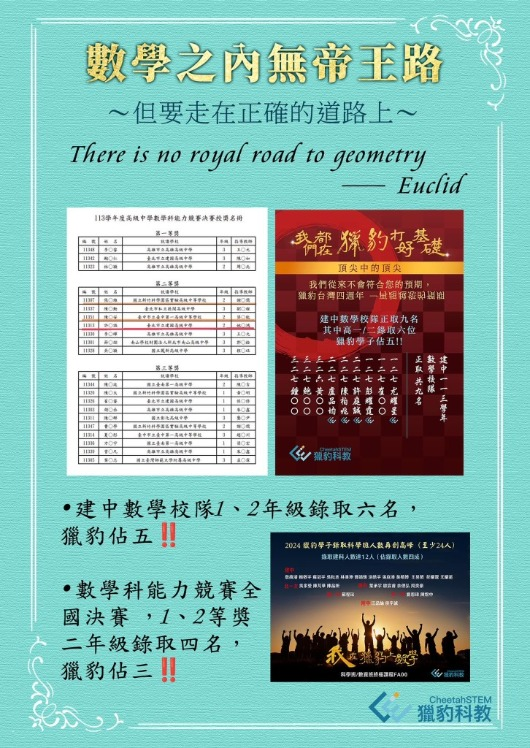
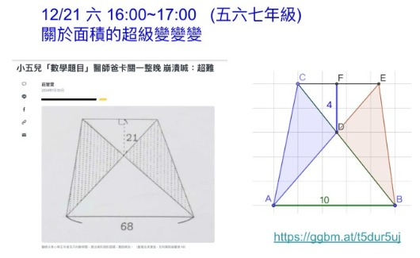

【 獵豹教你用小學方法秒解高中難題!】
許多家長心中的一個疑惑：「獵豹教小學生 高中難題, 是超綱教學嗎? 」
文章專欄獵豹談教育AMCGGB
閱讀全文可直接搜尋關鍵字，或從下拉選單選擇六大子項目。手機上也能快速操作。
許多家長心中的一個疑惑：「獵豹教小學生 高中難題, 是超綱教學嗎? 」

有個效應叫「解釋深度錯覺」是你以為你理解的東西，其實往往你並不真的理解

真有「高效率的學習」嗎？ 獵豹的 專家模式 用一半的題量 超越兩倍的效率!!
我們將解析如何在有限時間內透過專家模式，培養邏輯思維與解題觀點，找到適合自己的學習路徑。

數學高手的養成之路，從認識GGB開始！來聽聽獵豹老師分享如何利用GGB拔尖數學能力，讓孩子們的學習事半功倍！

很多面積難題，條件往往不夠直接？ 大人一看也不知如何下手？
幾何學一直是學生的痛點，那是因為沒有實際操作過動態幾何學。獵豹的學生有操作過動態幾何的經驗，在解幾何題上面都是如魚得水。

兩場講座，孩子收穫的是國中到高中無縫銜接的核心思維。
AMC是檢驗你「學習路徑」的照妖鏡
宗翰老師為同學們分析AMC10/12的命題特色與特殊的解題秘技，精彩可期，千萬別錯過！
DeepMind的AlphaProof/Geometry2 已經可拿下今年IMO銀牌 而且解出兩題最難壓軸題！
進步最快、學習成就最卓越的、最不可限量的，永遠是那些「享受」學習、「樂於」學習的孩子‼️ 而並非是「被」規範好學習計劃 ，「被」提供完整系統性資源的那些孩子。